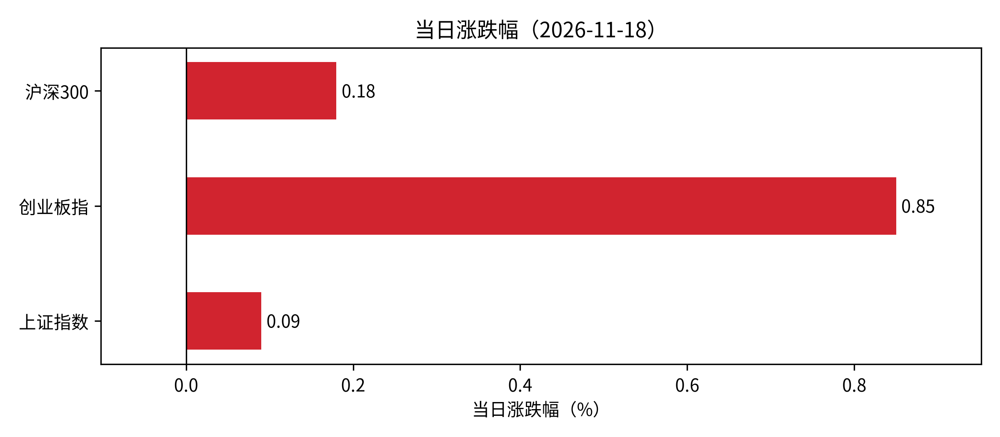

市场指数日报
2026-11-18 收盘
当日三大指数全线收涨，跌幅最大的是上证指数（0.09%）。年初至今创业板指累计回落 29.84%，幅度最深。
上证指数
+0.09%
收盘 3587.83
创业板指
+0.85%
收盘 2311.62
沪深300
+0.18%
收盘 3983.77
指数
收盘
当日
近20日
年初至今
量比
上证指数
3587.83
+0.09%
-3.37%
-10.83%
0.89
创业板指
2311.62
+0.85%
-14.22%
-29.84%
0.82
沪深300
3983.77
+0.18%
-3.12%
-15.56%
0.87
近 250 个交易日走势，起点归一化为 100

2026-11-18 当日涨跌幅，红涨绿跌